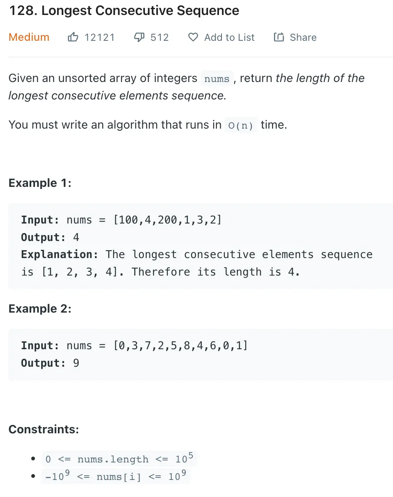

128. Longest Consecutive Sequence
考過的公司：Asked by: Amazon, Bytedance, Google
Question

先自己想想看 🤔Try it yourself first 🤔
✍🏽 My Solution
Solution #1 [暴力Set]
Time Limit Exceeded
class Solution {
public int longestConsecutive(int[] nums) {
Set<Integer> set = new HashSet<>();
for(int n : nums) {
set.add(n);
}
int max = 0;
for (int num : set) {
int nextNum = num + 1;
while (set.contains(nextNum)) {
nextNum++;
}
max = Math.max(max, nextNum - num);
}
return max;
}
}
Explanation (in my words)
- How does their solution work?
- 首先想一下最直接的暴力破解。我们可以用一个
HashSet把给的数组保存起来。然后再考虑数组的每个数，比如这个数是n，然后看n + 1在不在HashSet中，然后再看n + 2在不在，接下来n + 3、n + 4直到在HashSet中找不到，记录当前的长度。然后继续考虑下一个数，并且更新最长的长度。
- 首先想一下最直接的暴力破解。我们可以用一个
- What is the space/time complexity of their solution?
- time: O(n^2) 不符合題意
Solution #2 [Set 優化]
Runtime: 23 ms, faster than 86.12% of Java online submissions for Longest Consecutive Sequence. Memory Usage: 61.2 MB, less than 86.57% of Java online submissions for Longest Consecutive Sequence.
class Solution {
public int longestConsecutive(int[] nums) {
Set<Integer> set = new HashSet<>();
for(int n : nums) {
set.add(n);
}
int max = 0;
for (int num : set) {
if (!set.contains(num - 1)) { // only check for one direction
int nextNum = num + 1;
while (set.contains(nextNum)) {
nextNum++;
}
max = Math.max(max, nextNum - num);
}
}
return max;
}
}
Explanation (in my words)
-
How does their solution work?
- 要記得是遍歷set 不是遍歷num !!!!!!
- 依據題目意思，求出連續的最大長度
- 遍歷數組將每個數字加入set，以便後續比對連續數字
-
跟上一題相比，多了個剪枝的操作：遍歷set，我们只考虑从序列最小的数开始即可。
上边的暴力破解有一个问题就是做了很多没必要的计算，因为我们要找最长的连续数字。所以如果是数组
54367，当我们遇到5的时候计算一遍567。遇到4又计算一遍4567。遇到3又计算一遍34567。很明显从3开始才是我们想要的序列。当考虑
n的时候，我们先看一看n - 1是否存在，如果不存在，那么从n开始就是我们需要考虑的序列了。否则的话，直接跳过。
-
What is the space/time complexity of their solution?
- time: O(n)
- space: O(n)